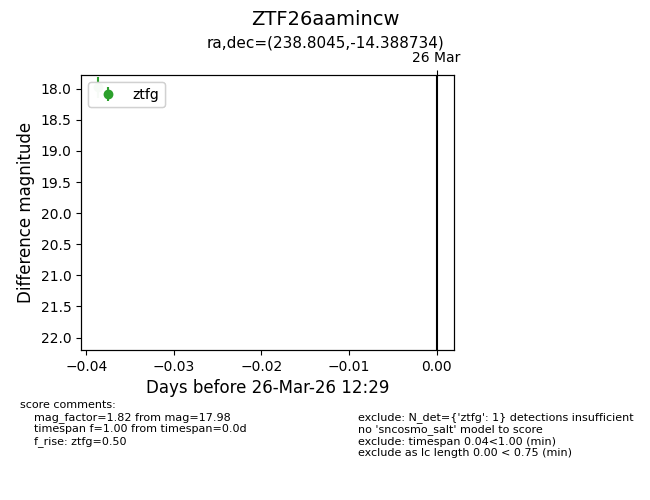
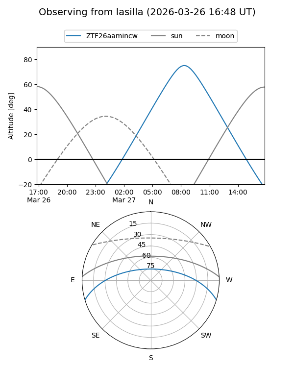
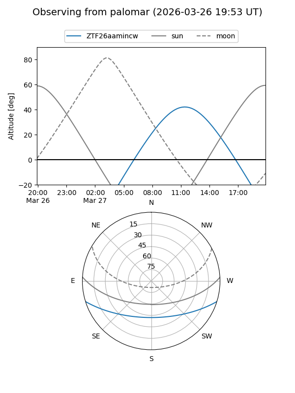

ZTF26aamincw
Target ZTF26aamincw at 2026-03-26 12:31
Aliases and brokers:
FINK: link
Lasair: link
ALeRCE: link
alt names
ZTF26aamincw (ztf,fink_ztf)
Coordinates:
equatorial (ra, dec) = 238.8045,-14.38873
equatorial (HMS+DMS) = 15:55:13.09,-14:23:19.44
galactic (l, b) = (355.7376,+29.08637)
Flags:
Photometry:
last ztfg=17.98
1 ztfg detections
Lightcurve

Visibility


Additional plots